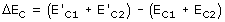
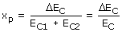
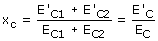
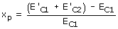
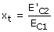
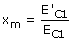

Energía
cinética perdida  Esta variación de energía cinética puede ser cero (Choque elás-tico: la energía cinética se conserva) o negativa (Choque in-elástico: parte de la energía cinética se concierte en calor) Se define fracción de energía cinética perdida como el cociente de la variación de energía cinética entre la energía cinética ini-cial de ambos cuerpos 
 Evidentemente se cumple que: xc - xp = 1 Energía cinética transferida
y mantenida La fracción de energía cinética perdida será:  Se define fracción de energía cinética transferida como el co-ciente de la energía cinética del cuerpo 2 tras el choque entre la energía cinética del cuerpo 1 antes del choque  Se define fracción de energía cinética mantenida como el co-ciente de la energías cinéticas del cuerpo 1 después y antes del choque  Evidentemente se cumple: xm + xt - xp
= 1 |